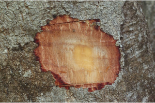
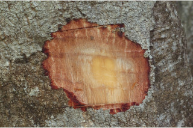
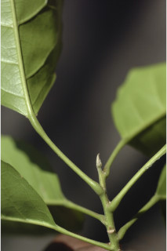
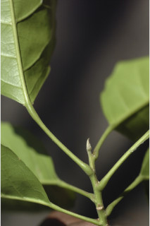

Trees up to 18 m tall.
18 ಮೀ. ಎತ್ತರದವರೆವಿಗೆ ಬೆಳೆಯುವ ಮರಗಳು
18 മീറ്റര് വരെ ഉയരത്തില് വളരുന്ന മരങ്ങള്.
மரம் 18 மீ. உயரம் வரை வளரக்கூடியது
Bark brownish, smooth; blaze orange red.
ತೊಗಟೆ ಕಂದುಬಣ್ಣದಲ್ಲಿದ್ದು ನಯವಾಗಿರುತ್ತವೆ;ಕಚ್ಚು ಮಾಡಿದ ಜಾಗ ಕಿತ್ತಳೆ ಕೆಂಪು ಬಣ್ಣದಲ್ಲಿರುತ್ತದೆ.
തവിട്ടുനിറത്തിലുളള മിനുസമാര്ന്ന പുറംതൊലി; വെട്ട്പാടിന് ഓറഞ്ച് ചുവപ്പ് നിറം.
மரத்தின் பட்டை ப்ரவுன் நிறமுடையது, வழுவழுப்பானது; உள்பட்டை ஆரஞ்சு கலந்த சிவப்பு நிறமுடையது
Branchlets terete, glabrous, with scars of fallen leaves.
ಕಿರುಕೊಂಬೆಗಳು ದುಂಡಾಗಿದ್ದು ಎಲೆಉದುರಿದ ಗುರುತು ಸಮೇತವಿದ್ದು ರೋಮರಹಿತವಾಗಿರುತ್ತವೆ.
കൊഴിഞ്ഞ ഇലയുടെ അടയാളങ്ങളോടുകൂടിയ, അരോമിലമായ, ഉരുണ്ട ഉപശാഖകള്.
சிறுநுனிக்கிளைகள் குறுக்குவெட்டுத் தோற்றத்தில் வளையமானது, உரோமங்களற்றது, மற்றும் இலைகள் விழுந்ததால் ஏற்படும் வடு கொண்டது.
Leaves simple, alternate, spiral, clustered at twig ends; stipules small, lanceolate, caducous; petiole 1.2-4 cm long, swollen at both ends, planoconvex, glabrous, with subulate appendage at the junction of lamina; lamina 5.5-12.5 x 2.5-5 cm, elliptic, apex acuminate with blunt tip, base acute, margin serrate, chartaceous, glabrous, red when senescent; midrib slightly raised above; secondary_nerves 5-9 pairs, branched with glabrous domatia at axils beneath; tertiary_nerves reticulo-percurrent; higher order reticulation slender, minute.
ಎಲೆಗಳು ಸರಳವಾಗಿದ್ದು,ಪರ್ಯಾಯ ಮತ್ತು ಸುತ್ತು ಜೋಡನಾ ಮಾದರಿಯಲ್ಲಿದ್ದು ಕುಡಿಕೊಂಬೆಗಳ ತುದಿಯಲ್ಲಿ ಗುಂಪಾಗಿರುತ್ತವೆ;ಕಾವಿನೆಲೆಗಳು ಕಿರಿಗಾತ್ರದವು, ಭರ್ಜಿಯಾಕಾರ ಹೊಂದಿದ್ದು ಉದುರಿ ಹೋಗುವಂತಹವು;ತೊಟ್ಟುಗಳು 1.2 - 4 ಸೆಂ.ಮೀ. ಉದ್ದವಿದ್ದು ಎರಡೂ ತುದಿಯಲ್ಲಿ ಊದಿಕೊಂಡಿರುತ್ತವೆ ಹಾಗೂ ಅಡ್ಡ ಸೀಳಿದಾಗ ಸಪಾಟ ಪೀನ ಮಧ್ಯ ಆಕಾರ ಹೊಂದಿರುತ್ತವೆ ಮತ್ತು ಪತ್ರವನ್ನು ಸಂಧಿಸುವ ಸ್ಥಳದಲ್ಲಿ ದಬ್ಬಳದಾಕಾರದ ಉಪಾಂಗ ಸಮೇತವಿದ್ದು ರೋಮರಹಿತವಾಗಿರುತ್ತವೆ; ಪತ್ರಗಳು 5.5 – 12.5 X2. 5 –5 ಸೆಂ. ಮೀ. ಗಾತ್ರ, ಅಂಡವೃತ್ತದ ಆಕಾರ, ಮೊಂಡಾದ ಅಗ್ರವುಳ್ಳ ಕ್ರಮೇಣ ಚೂಪಾಗುವ ಮಾದರಿಯ ತುದಿ, ಚೂಪಾದ ಬುಡ , ಗರಗಸ ದಂತಿತ ಅಂಚು ,ಕಾಗದವನ್ನೋಲುವ ಮೇಲ್ಮೈ ಹೊಂದಿದ್ದು ರೋಮರಹಿತವಾಗಿರುತ್ತವೆ; ಪತ್ರಗಳು ಮುಪ್ಪಾದಾಗ ಕೆಂಪು ಬಣ್ಣ ಹೊದಿರುತ್ತವೆ; ಮಧ್ಯ ನಾಳ ಪತ್ರದ ಮೇಲ್ಭಾಗದಲ್ಲಿ ಕೊಂಚ ಉಬ್ಬಿರುತ್ತದೆ; ಎರಡನೇ ದರ್ಜೆಯ ನಾಳಗಳು 5- 9 ಕವಲೊಡೆಯುವ ಜೋಡಿಗಳಿದ್ದು ಪತ್ರದ ತಳಬಾಗದ ಅಕ್ಷಾಕಂಕುಳಿನಲ್ಲಿ ರೋಮರಹಿತವಾದ ಸಹಜೀವಿ ಗೂಡುಗಳ ಸಮೇತವಿರುತ್ತವೆ; ಮೂರನೇ ದರ್ಜೆಯ ನಾಳಗಳು ಜಾಲಬಂಧ ನಾಳ ವಿನ್ಯಾಸದಲ್ಲಿದ್ದು ಎಲೆ ದಿಂಡಿಗೆ ಅಡ್ಡವಾಗಿ ಕೂಡುವಂತಹವು; ಮೇಲ್ದರ್ಜೆಯ ನಾಳಗಳ ಜಾಲಬಂಧ ನಾಳ ವಿನ್ಯಾಸ ತೆಳು ಹಾಗೂ ಸೂಕ್ಷ್ಮವಾಗಿರುತ್ತದೆ.
ലഘുവായ ഇലകള്, ഏകാന്തരക്രമത്തില്, സര്പ്പിളമായി, തണ്ടിന്റെ അറ്റത്ത് മാത്രമായടുക്കിയ വിധത്തില്; എളുപ്പം കൊഴിഞ്ഞ് വീഴുന്ന, ചെറിയ, കുന്താകാര അനുപര്ണ്ണങ്ങള്; രണ്ടറ്റത്തും വീര്ത്ത, 1.2 സെ.മീ മുതല് 4 സെ.മീ നീളമുളള, അരോമിലമായ ഒരുഭാഗം പരന്നും മറുഭാഗം പരന്നുമുളള ഘടനയോടുകൂടിയ ഇലഞെട്ട്, പത്രഫലകവുമായി ചേരുന്നിടത്ത് രൂഷാകാര അംഗങ്ങളുണ്ട്; പത്രഫലകത്തിന് 5.5 സെ.മീ മുതല് 12.5 സെ.മീ വരെ നീളവും. 2.5 സെ.മീ മുതല് 5 സെ.മീ വരെ വീതിയും, ദീര്ഘവൃത്താകാരവും, മുനപ്പില്ലാത്ത ദീര്ഘാഗ്രവും, നിശിതമായ പത്രാധാരവുമാണ്, അരികുകള് ദന്തിതമാണ്, കടലാസ് പോലത്തെ പ്രകൃതം, അരോമിലം, മൂക്കുമ്പോള് ചുവപ്പുനിറമാകുന്നു; മുഖ്യസിര മുകളില് ഒരല്പ്പം ഉയര്ന്നതാണ്; 5 മുതല് 9 വരെ ജോഡി ദ്വിതീയ ഞരമ്പുകള്, കീഴ്ഭാഗത്ത് ശാഖകളുടെ കക്ഷങ്ങളില് അരോമിലമായ ഡോമേഷ്യ ഉളളതുമാണ്; ത്രിതീയ ഞരമ്പുകള് ജാലിത-പെര്കറന്റ് ആണ്; മറ്റ് സിരകളുടെ ജാലകങ്ങള് സൂക്ഷ്മവും നേര്ത്തതുമാണ്.
இலைகள் தனித்தவை, மாற்றுஅடுக்கமானவை, சுழல் போன்ற அமைப்பு, சிறுகிளைகளின் நுனியில் இலைகள் கூட்டமாக மற்றும் நெருக்கமாக காணப்படும்; இலையடிச்செதில் சிறியது, ஈட்டி வடிவமுடையது, உதிரக்கூடியது; இலைக்காம்பு 1.2-4 செ.மீ. நீளமானது, இருமுனைகளிலும் தடித்தது, குறுக்குவெட்டுத் தோற்றத்தில் பிளேனோகான்வக்ஸ், உரோமங்களற்றது, மற்றும் இலைக்காம்பு இலையில் இணையும் இடத்தில் ஈட்டி போன்ற செதில் காணப்படும்; இலை அலகு 5.5-12.5 X 2.5-5 செ.மீ., நீள்வட்டமுடையது, அலகின் நுனி வால் போன்று நீண்டது முனை மழுங்கியது, அலகின் தளம் கூரியது, அலகின் விளிம்பு ரம்ப பற்களுடையது, சார்ட்டேசியஸ், உரோமங்களற்றது, பழுத்த இலைகள் சிவப்பு நிறமுடையது; மையநரம்பு மேற்புறத்தில் அலகின் பரப்பைவிட சற்று உயர்ந்து இருக்கும்; இரண்டாம் நிலை நரம்புகள் 5-9 ஜோடிகள், நரம்புகள் கிளைத்தது மற்றும் உரோமங்களற்ற டொமேஸ்சியா நரம்புகள் இணையும் இடத்தில் கீழ்பரப்பில் காணப்படும்; மூன்றாம் நிலை நரம்புகள் வலைப்பின்னல் கொண்ட பெர்க்கரண்ட், மூன்றாம் நிலைக்கு மேற்பட்ட நரம்புகள் மெலிதானது மற்றும் வலைப்பின்னல் அமைப்பு கொண்டது.
Inflorescence racemes; flower petals white, laciniate, anthers ciliate.
ಪುಷ್ಪಮಂಜರಿ ಮದ್ಯಾಭಿಸರ ಮಾದರಿಯವು;ಪುಷ್ಪದಳಗಳು ಬಿಳಿ ಬಣ್ಣಹೊಂದಿದ್ದು, ಆಳವಾದ ಸೀಳಿಕೆಗಳ ಸಮೇತವಿರುತ್ತವೆ.;ಪರಾಗಾಶಯ ಸ್ಪಂದನಾಶೀಲ ರೋಮಗಳ ಸಹಿತವಾಗಿರುತ್ತವೆ.
പൂങ്കുലകള് റസീമുകളാണ്; നന്നായി വിണ്ടുകീറിയ വെളുത്ത ദളങ്ങളും, സീലിയകളുമുളള കേസരങ്ങളുളളതുമായ പൂക്കള്.
ரெசீம் மஞ்சரி, மலரின் அல்லி இதழ்கள் வெள்ளை நிறம் உடையது, விளிம்பு பிரிந்தவை, மகரந்தம் உரோமங்களுடையது (சிலியேட்).
Drupe, oblong or ovoid to 2.5 cm long; seeds 3-4.
ಡ್ರೂಪ್ಗಳು ಚತುರಸ್ರ ಅಥವಾ ಅಂಡಾಕಾರದಲ್ಲಿದ್ದು 2.5 ಸೆಂ ಮೀ.ಉದ್ದವಿರುತ್ತವೆ ಹಾಗೂ 3 – 4 ಬೀಜಗಳನ್ನೊಳಗೊಂಡಿರುತ್ತವೆ.
3 ഓ 4 ഓ വിത്തുകളുളള കായ, 2.5 സെ.മീ വരെ നീളമുളള ആയതാകാരമോ അണ്ഡാകാരമോ ആയ ഡ്രൂപ്പ് ആണ്.
நீள்சதுரம் அல்லது முட்டை வடிவ உள்ளோட்டுத்தசைகனி (ட்ரூப்), 2.5 செ.மீ. நீளமானது; 3-4 விதைகள் கொண்டது.

 

 
